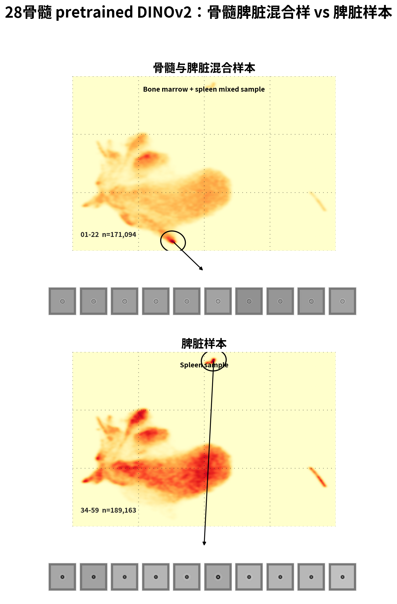

28骨髓/脾脏样本 UMAP 分布复现
按文件夹来源复现示意图：上方为 01-22 骨髓与脾脏混合样本，下方为 34-59 脾脏样本。橙红色区域显示在同一个全量 UMAP 坐标中的样本分布；同一个模型内上下两图使用同一颜色标尺；灰色细胞块来自黑圈标出的局部区域。
28骨髓 adapted DINOv2 e5：骨髓脾脏混合样 vs 脾脏样本

28骨髓 pretrained DINOv2：骨髓脾脏混合样 vs 脾脏样本

